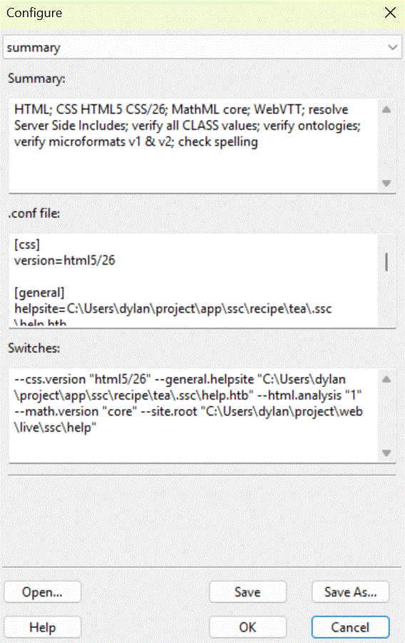

summary panel
The summary panel is part of the Configure Dialogue.

-
A slightly easy to read list of settings that differ from their default values;
-
A configuration file format suitable for use by both the GUI and command line versions of ssc;
-
A series of command line switches for use with both the GUI and command line versions of ssc.